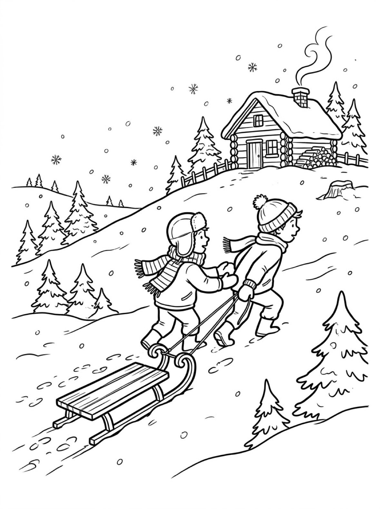
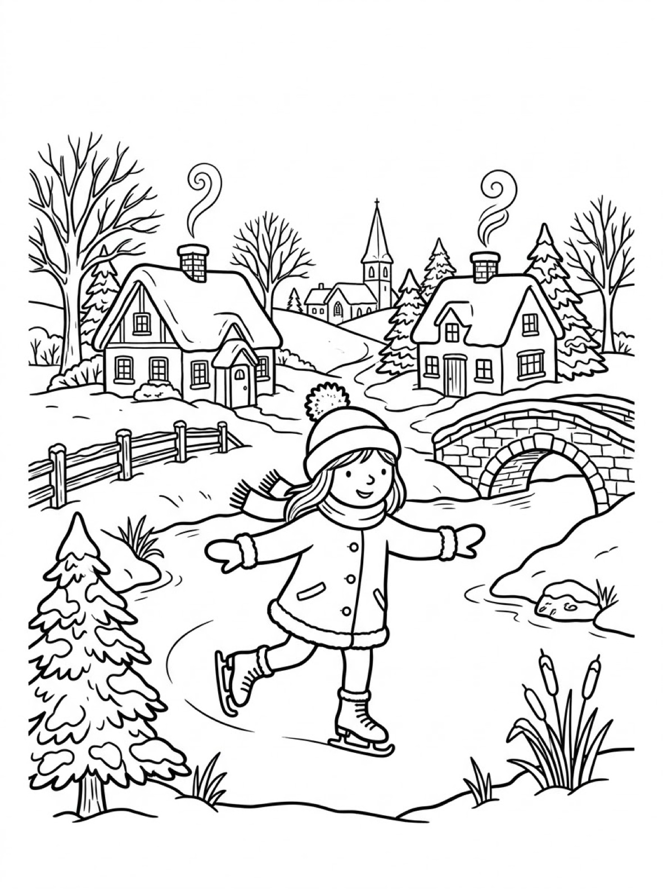

Free Winter Coloring Pages Snowman, Sledding & Ice Skating Printables
These free winter coloring pages bring the best of the season to your kitchen table — a snowman scene, a sledding hill, and an ice-skating pond. Download them below, print at home on letter-size paper, and warm up with crayons. No signup needed.
Last updated: October 21, 2026
Quick Answer
Yes — this page has three free printable winter coloring pages: a snowman with a lantern in a snowy forest, two kids pulling a sled up to a log cabin, and a girl ice-skating on a frozen village pond. Bold outlines and big spaces, made for little hands. Download, print on letter-size paper, and hand over the crayons — no signup, no cost.
At a Glance
- Ages: 3–8
- Pages: 3 free printables
- Format: Print at home, letter size
- Cost: Free, no signup
- Supplies: Crayons or markers
- Time: 10–20 minutes
☃️ Snowman with a Lantern Coloring Page

🎨 Download Your Free Snowman Coloring Page
A smiling snowman in a top hat and long scarf holding a lantern in a snowy pine forest, with a bunny peeking from a stump — bold outlines, big spaces, zero signup.
⬇️ Download Free Snowman Page 🖨️ Print Snowman Page🎁 Free printable for preschoolers & kids
🛷 Kids Sledding to the Cabin Coloring Page

🎨 Download Your Free Sledding Coloring Page
Two kids pulling a wooden sled up a snowy hill toward a log cabin with smoke curling from the chimney — bold outlines, big spaces, zero signup.
⬇️ Download Free Sledding Page 🖨️ Print Sledding Page🎁 Free printable for preschoolers & kids
⛸️ Ice Skating on the Pond Coloring Page

🎨 Download Your Free Ice Skating Coloring Page
A girl ice-skating on a frozen village pond, with cottages, a stone bridge and a church spire behind her — bold outlines, big spaces, zero signup.
⬇️ Download Free Ice Skating Page 🖨️ Print Ice Skating Page🎁 Free printable for preschoolers & kids
More Coloring Pages
Tap any picture to open its theme page and download the free printable.


❄️ How To Use This Page
- Browse the three scenes and pick the winter moment your child will love most.
- Tap download or print under that design — the file opens full-size, ready for letter-size paper.
- Print an extra copy of the snowman — it is the fastest page in the set and kids love making a matched pair.
- Color together with crayons or markers, ideally with hot chocolate nearby.
❄️ Why Kids Love Winter Coloring Pages
Winter is the season kids experience with their whole bodies — cold noses, crunchy snow, early dark evenings — and coloring it lets them replay all of it from a warm chair. A snowman they don't have to build before it melts, a sledding hill with no climb back up (well, almost), and a skating pond that never cracks: each page on this set is a small piece of the season to keep.
Winter scenes also teach a real coloring skill: working with white. Snow, ice and falling flakes mostly stay uncolored, so kids learn to build a picture by coloring everything around the empty space. It is a gentle first lesson in contrast, and the results look impressive even from young colorers.
☃️ The Three Winter Scenes on This Page
The snowman with a lantern. A smiling snowman in a top hat and a long striped scarf stands in a snowy pine forest, holding up a lantern. A bunny peeks over a snow-covered tree stump beside him, tiny paw prints trail through the snow, and snowflakes drift between the bare branches overhead. The snowman's round sections are big and bold for young colorers, while the forest and falling snow reward older ones.
The sledding hill. Two bundled-up kids pull a wooden sled up a snowy hill toward a log cabin with smoke curling from its chimney and firewood stacked by the door. Pine trees dot the hillside and footprints mark the path they have already climbed. It is the most story-filled page in the set — kids love deciding whose cabin it is, and how fast the ride back down will be.
The ice-skating pond. A girl in a pom-pom hat, scarf and mittens glides across a frozen village pond with her arms out for balance. Snow-roofed cottages, a stone bridge, a church spire and bare winter trees frame the scene. The pond itself is one big open space — perfect for pale-blue shading practice — while the village rewards kids who like lots of little details.
✏️ Winter Coloring Tips
- Leave the snow white — or almost. Snow reads as snow when it stays white or gets the lightest blue or gray shading. Color everything around it and the white pops on its own.
- Go warm against the cold. Reds, oranges and yellows for scarves, mittens and cabin windows make the whole scene feel cozy against the cool blues and whites.
- Color the sky softly. A light blue or pale gray sky, colored with the side of the crayon, makes the falling snowflakes stand out — because the flakes themselves stay white.
- Print the snowman twice. It is the quickest page in the set, and kids love a matched pair of snowmen with different scarf colors.
❄️ Coloring Pages for Different Ages
For ages 3 to 4, start with the snowman. Three big round sections, a hat and a scarf are all a little colorer needs to feel finished, and the bunny on the stump is a sweet bonus to hunt for. Scribbled snow is still snow at this age.
For ages 5 to 6, the sledding hill hits the sweet spot. The sled, the kids' coats and the cabin give clear, satisfying shapes, with pine trees and footprints as optional extras when energy runs long.
For ages 7 to 8, the ice-skating pond carries the most detail — cottage windows, bridge stones, fence posts and the village skyline. It rewards slow, careful coloring and makes a genuinely frame-worthy finished page.
☕ More Winter Fun After Coloring
Turn the set into a homemade winter coloring book: print all three scenes, staple them along the left edge, and let your child decorate a cover. It makes a sweet quiet-time book for December and January car rides.
For a full snow day at the table, pair these pages with our winter printable bundle — a separate set of 12 winter printables with matching, tracing, counting and a snowman maze, plus its own penguin, snowflake and snowman coloring sheets. The three scenes on this page are different designs, made to sit alongside the bundle, not repeat it.
🔗 More Free Printables You’ll Love
- Free Winter Printable Bundle 12 winter printables — matching, tracing, counting, a snowman maze, and the bundle's own coloring sheets.
- Free Christmas Coloring Pages Trees, ornaments and Santa scenes to print and color.
- Free Fall Coloring Pages Leaves, pumpkins and harvest scenes for autumn afternoons.
- All Free Coloring Pages Browse every free coloring page on the site, organized by theme.
❓ Winter Coloring Pages FAQ
Are these winter coloring pages really free?
Yes — all three designs on this page are free original printables from MomYouNeedThis. Download them, print them at home, and color — no signup and no cost.
What ages are these coloring pages best for?
Kids ages 3 to 8 get the most from this set. The snowman is the gentlest start for younger children, while the sledding and ice-skating scenes have the detail older kids enjoy.
How do I print a coloring page?
Tap the download button under the design you want, then print the file on regular letter-size paper. The print button opens the full-size page in a new tab if you prefer to print from there.
Are these the same coloring sheets as the winter bundle?
No — the snowman, sledding and ice-skating designs on this page are a separate set. The winter printable bundle has its own coloring sheets (a penguin, a snowflake and a snowman) plus matching, tracing, counting and maze activities. Plenty of families print both.
Can I make a winter coloring book from these pages?
Yes — print all three designs, stack them, and staple along the left edge. Add a cover sheet with your child's name and the date for a keepsake winter coloring book.